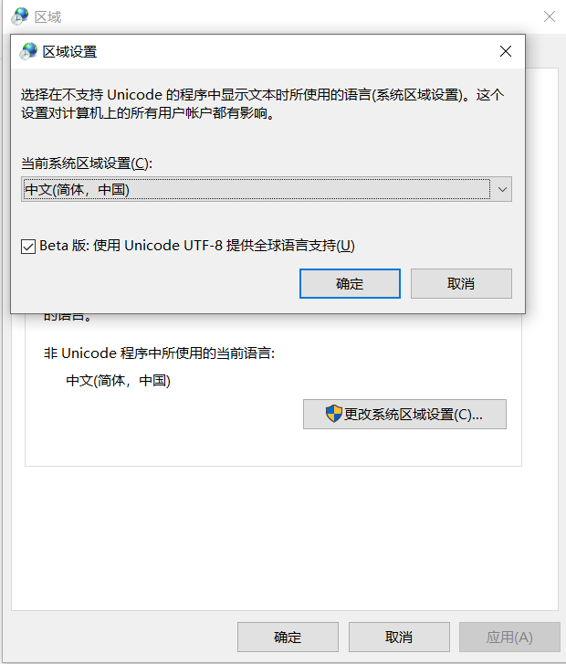

QOR踩坑日记
QOR-CMS Open source has lots of bugs.to fix these bugs cost me lots of time.So record them into this article!
Win10下consle日志乱码问题
我最原始的猜想是不是因为cmd编码的问题，因为系统是中文系统cmd编码是GBK。这里引入另外一个问题，我们每次都要使用chcp 65001将当前code page更改为UTF-8，或者修改注册表：
regedit->[HKEY_LOCAL_MACHINE]\[SOFTWARE]\[Microsoft]\[Command Processor]\
新建字符串值，
AutoRun=chcp 65001 >nul 2>&1
其实可以在语言和区域(区域->管理->更改系统区域设置)通过勾选”使用Unicode UTF-8提供全球语言支持”即可(谨慎使用，有些软件会出现乱码的现象)，如下图所示:

然而事实上我发现即使改了编码，在cmd下还是乱码。继续下一个猜测，因为就乱码表现形式来看，日志行使用了背景色，源码使用chi的middleware.Logger中间件来记录日志,在terminal.go源文件里，使用了isTTY来判断当前环境是否是linux-shell环境。使用fmt.Println()打印调试证实是这里出现了问题：
func init() {
// This is sort of cheating: if stdout is a character device, we assume
// that means it's a TTY. Unfortunately, there are many non-TTY
// character devices, but fortunately stdout is rarely set to any of
// them.
//
// We could solve this properly by pulling in a dependency on
// code.google.com/p/go.crypto/ssh/terminal, for instance, but as a
// heuristic for whether to print in color or in black-and-white, I'd
// really rather not.
fi, err := os.Stdout.Stat()
if err == nil {
m := os.ModeDevice | os.ModeCharDevice
isTTY = fi.Mode()&m == m
}
}
isTTY此变量在win10-cmd下被赋值为true,因此我们需要关闭logger中间件的色彩日志记录功能，设置DefaultLogger为自定义的日志格式：
noneColorLoggerFormatter := middleware.DefaultLogFormatter{
Logger: log.New(os.Stdout, "", log.LstdFlags),
NoColor: true,
}
middleware.DefaultLogger = middleware.RequestLogger(&noneColorLoggerFormatter)
Router.Use(middleware.Logger)
bindatafs(binary-data-file-system)
QOR使用bindatafs组件将所有admin后端使用到的文件打包成二进制文件，编译链接进2进制可执行文件里面去。步骤如下：
- 配置vs-code的launch.json文件，设置可执行文件参数
--compile-templates。 - 这样会执行
bindatafs.AssetFS.Compile()。 - 找到所有被引用过的文件，并拷贝到
config\bindatafs\templates目录下，然后生成templates-bindatafs.go文件(请阅读生成的源码)。 - 生成可执行程序，使用编译tags做条件编译。默认编译不带任何参数是使用
templates.go文件进行编译。 可以配置launch.json文件，
"buildFlags": "-tags \'bindatafs\'"开启条件编译，即可将所有文件编译进target文件。//templates.go // +build !bindatafs
说明: // +build !bindatafs 即为编译条件
gorm异步日志记录
gorm错误日志记录采用异步的方式，在新的gorutine里面运行。采用gorm.Logger{revel.TRACE}来记录日志。
db.Model(Product{}).Where(&b).Scan(&b)
通过Scan源码了解到，该库使用了s.parent.callbacks.queries回调函数来执行数据库的查询功能。
而queries回调函数通过Register进行注册，查找所有引用(Find All References)找到query_callback.go->queryCallback
方法，在方法内部使用了如下：
//调用Err方法
scope.Err(err)
//Err方法内部又调用了
scope.db.AddError(err)
//在AddError内部，发现开辟了一个新的gorutine记录错误日志
if s.logMode == defaultLogMode {
go s.print("error", fileWithLineNum(), err)
} else {
s.log(err)
}
因为使用了多线程，多线程的调试全凭看源码+猜测然后精准定位，目前没有找到好的调试方法。